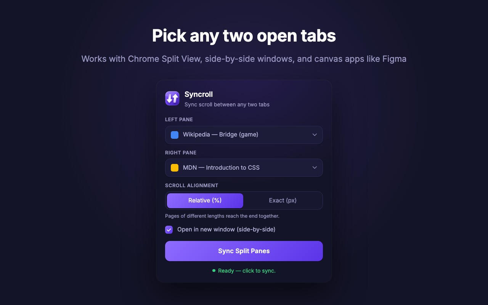
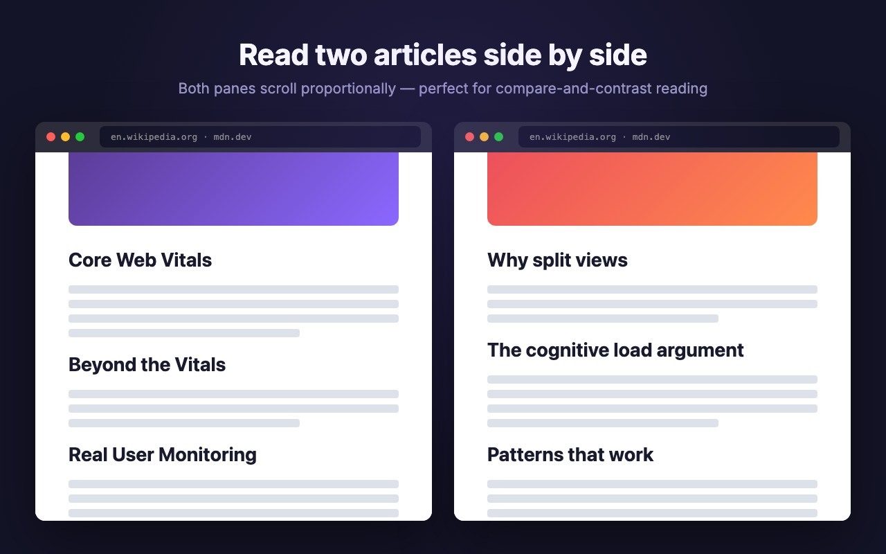
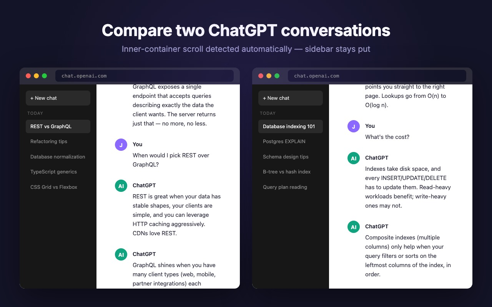
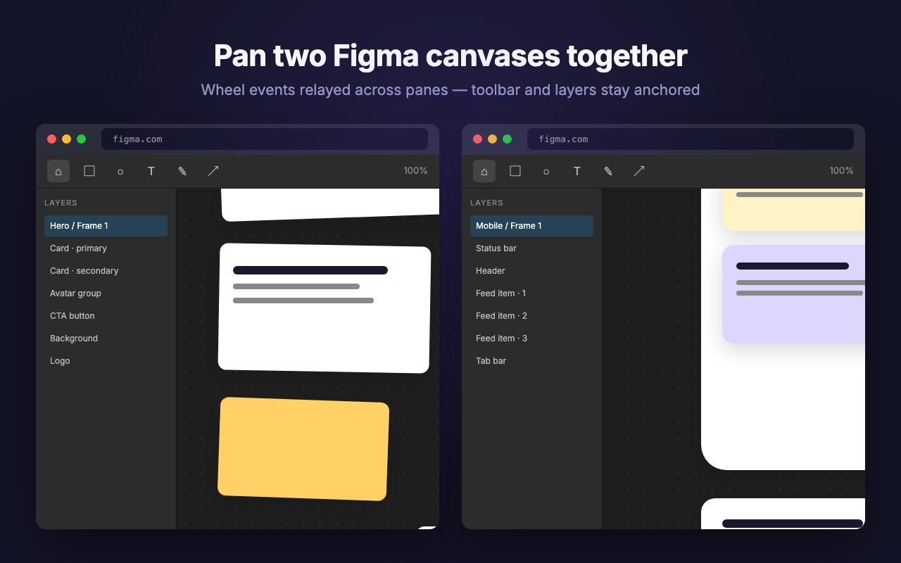

Syncroll
Scroll any two tabs together — Chrome's native Split View, or two side-by-side windows Syncroll opens for you.
Why Syncroll
Built for Chrome's native Split View
Designed around Chrome 145+ Split View — open the popup inside a split and both panes are detected automatically. A first-class fit for Chrome's newest tab layout.
Side-by-side windows on demand
Tick a single checkbox and Syncroll arranges two windows at the left and right halves of your screen — instant side-by-side, on any monitor, in any setup.
Pick any two open tabs
Cross-window dropdowns list every open page with its favicon. Choose the left and right pane from anywhere — no dragging tabs around to set things up first.
Percent or pixel alignment
Choose how two pages line up: relative, so both reach the end together, or exact pixels, so they scroll the same distance and the shorter page stops at its end. Switch any time, even mid-sync.
Canvas-app pan sync
Wheel events relayed across panes so Figma, Miro, and Excalidraw canvases pan together in lock-step. A capability built right into Syncroll from day one.
Chat UI aware
Detects the inner scroll container on ChatGPT, Gemini, and Slack — sidebars stay anchored while the conversation scrolls together on both sides.
Private by design
No servers, no analytics, no data collection. Sync runs locally through Chrome's built-in messaging — your tabs and content stay entirely on your machine.
How it works

Tab picker + side-by-side windows
Cross-window picker lists every open tab with its favicon. Works seamlessly inside Chrome's native Split View, and tick Open in new window to have Syncroll arrange two side-by-side windows for you on the fly.
Works everywhere

Standard websites
Wikipedia, MDN, news sites. Proportional sync keeps pages of different lengths aligned, or switch to exact-pixel alignment when you want both sides to travel the same distance.

Chat UIs
ChatGPT, Gemini, Slack. Detects the inner scroll container — sidebar stays put, only the conversation scrolls.

Canvas apps
Figma, Miro, Excalidraw. Wheel events relayed across panes for true side-by-side panning.
Get started
- Install Syncroll from the Chrome Web Store.
- Click the Syncroll icon and pick the left and right tab from the dropdowns. Any tab in any window works.
- Already in Chrome's native Split View? Both panes are detected automatically. Or tick Open in new window to have Syncroll arrange two side-by-side windows for you.
- Pick a Scroll alignment: Relative (%) so both pages reach the end together, or Exact (px) so both travel the same distance. Your choice is remembered.
- Hit Sync Split Panes. Scroll either side; the other follows.
Ready to scroll two tabs together?
Free, open source, and built for Chrome's native Split View. Install in one click — no account, no setup.